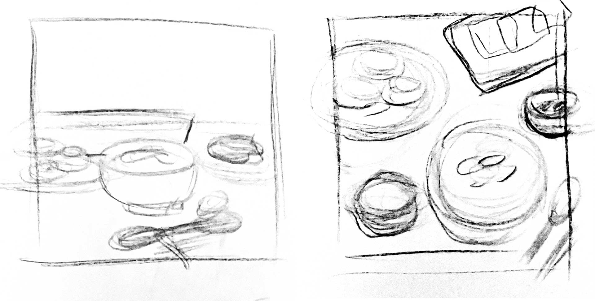

Lunar New Year
An experiment in combining illustrative paper-like textures with motion in 3D modeling. This piece represents a feast of traditional Korean food that I am accustomed to having with my famliy for years.
Visual Development
Sketches of compositions I considered.